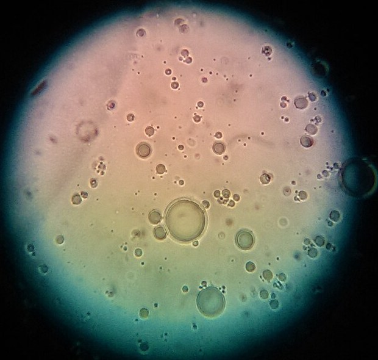

Partículas y gotas dispersas en un líquido
Si mezclás barro con agua y dejás el vaso quieto, al rato el barro está en el fondo. Si mezclás leche con agua, en cambio, la leche no se va al fondo nunca. Y si batís aceite con vinagre, se separan en minutos, salvo que agregues yema de huevo: entonces tenés mayonesa. Las tres son mezclas de algo disperso dentro de un líquido, pero se comportan muy distinto.
El libro Chemistry 2e de OpenStax distingue tres tipos de mezcla según el tamaño de lo que está disperso [1]. En una suspensión, como el barro en agua, las partículas son relativamente grandes, visibles o casi, la mezcla es turbia y las partículas se depositan con el tiempo [1]. En una solución, las moléculas o iones son invisibles, la mezcla es transparente y nada se deposita [1]. En el medio están los coloides, cuyas partículas son más grandes que la mayoría de las moléculas, pero lo bastante chicas para no depositarse [1].
Una manera de reconocer un coloide es iluminarlo: sus partículas son lo bastante grandes para dispersar la luz, y el haz se ve atravesando la mezcla. Es el efecto Tyndall [1].
Una emulsión es un coloide de un líquido dentro de otro: OpenStax da como ejemplos la leche, la mayonesa y la manteca [1]. Se prepara agitando o licuando dos líquidos que no se mezclan [1]. Pero en muchas emulsiones, las gotitas tienden a juntarse, formar gotas grandes y separarse [1]. Por eso se las estabiliza con un emulsionante, una sustancia que impide que las gotas se fusionen [1].
OpenStax da ejemplos de cocina: la leche es una emulsión de grasa de manteca en agua, estabilizada por la proteína caseína; la mayonesa es una emulsión de aceite en vinagre, estabilizada por componentes de la yema de huevo [1]. Las moléculas de los emulsionantes son anfifílicas: tienen una parte que «odia» el agua y otra que la «ama» [1], de modo que se ubican en la superficie de las gotas.

Los guardias en la frontera: imaginá cada gotita de aceite rodeada por una fila de guardias, con un pie en el aceite y otro en el agua. Cuando dos gotas se acercan, los guardias de una chocan con los de la otra y no las dejan fusionarse. Eso hacen las moléculas anfifílicas de la yema en la mayonesa.
Agregar partículas a un líquido lo vuelve más viscoso. Jonas Einarsson y colaboradores, de la Universidad de Stanford, recuerdan que el primer cálculo de ese efecto lo hizo Einstein en su tesis doctoral: para una suspensión diluida de esferas rígidas en un fluido newtoniano, la viscosidad es [2]:
La viscosidad aumenta porque las partículas se resisten a deformarse [2]. La fórmula vale para suspensiones diluidas, en las que se pueden ignorar las interacciones entre partículas [2]. Un 2 % de esferas, por ejemplo, sube la viscosidad un 5 % (un cálculo propio con la fórmula).
Cuando la suspensión es muy concentrada, todo cambia: aparece el comportamiento de la maicena con agua, que se endurece al golpearla, que se cuenta en fluidos no newtonianos [3]. Y las emulsiones muy concentradas, según Daniel Bonn y colaboradores, se vuelven sólidas cuando la fracción de gotas supera un empaquetamiento crítico: es una verdadera transición de atascamiento [4]. Bonn y colaboradores cuentan a la mayonesa entre los materiales con tensión de fluencia, que no fluyen hasta que se los empuja con cierta fuerza [4]; su mucho aceite en gotas apretadas ayuda a entender por qué se sostiene sobre una cuchara (un razonamiento a partir de esa transición).
Aun con emulsionante, una emulsión cambia con el tiempo. John Bush, del MIT, describe la maduración de Ostwald: en las espumas y las emulsiones, el contenido de las gotas o burbujas se difunde de las chicas a las grandes, desde donde la presión de Laplace es alta hacia donde es baja [5]. Como la presión dentro de una gota es mayor cuanto más chica es, las gotas chicas se vacían en las grandes.
Gotas a medida: en los canales de un chip de microfluídica se pueden fabricar emulsiones con gotas todas iguales. Todd Squires y Stephen Quake cuentan que Thorsen y colaboradores, en 2001, inyectaron agua en una corriente de aceite en una unión en T: la tensión superficial y las tensiones viscosas compiten en la interfaz, y la corriente de agua se corta en gotas de un tamaño controlado [6]. Se cuenta en microfluídica.
Las suspensiones tienen partículas grandes que se depositan; los coloides, partículas más chicas que se quedan flotando y dispersan la luz. Las emulsiones son gotas de un líquido en otro, que se mantienen gracias a un emulsionante, como la yema en la mayonesa. Las partículas espesan el líquido, poco si están diluidas, según la fórmula de Einstein, y muchísimo si están apretadas, hasta volverlo casi sólido.
Pregunta para la comunidad: Cuando la mayonesa casera «se corta», el aceite se separa. ¿Qué crees que les pasó a las gotitas de aceite y a los «guardias» de la yema?